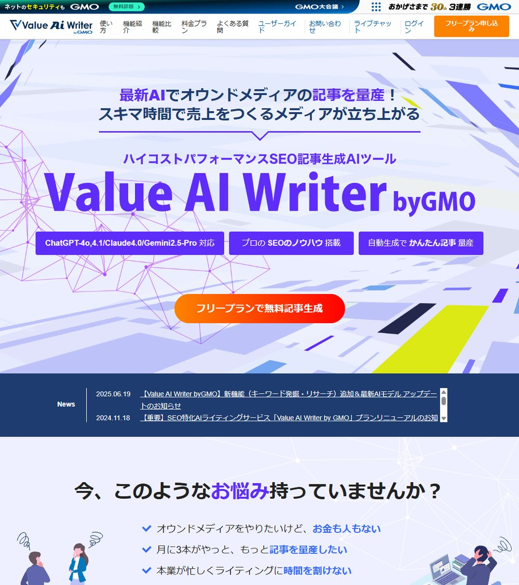

AIライティングツール比較2026｜Value AI Writer vs Writesonic vs Surfer

3つの違い早見表
| ツール | 主な用途 | 言語 | 無料で試す |
|---|---|---|---|
| Value AI Writer | SEO記事の生成・WordPress連携 | 日本語 | フリープラン（月1本） |
| Writesonic | 英語記事・マーケコピー | 英語中心 | 無料トライアル／記事数制限 |
| Surfer | 検索意図の分析・コンテンツ最適化 | 英語中心 | トライアルあり |
Value AI Writer byGMO
GMOデジロックが提供する、日本語SEOに特化した記事作成ツールです。キーワードからタイトル・見出し・本文を生成し、HTML出力やWordPress連携に対応。本文生成モデルは GPT-4o / 4.1 / Claude 4.0 / Gemini 2.5 Pro から選べます。フリープランは月1本（初回のみ3本）で、まず1本作り切ってから有料化を判断できます。Value AI Writer の詳細レビュー →
主要機能：キーワード調査
キーワード難易度を5段階で判定し、今のサイトで狙うべき語かどうかが分かります。サジェスト調査はプロ以上、被リンクドメイン調査はエキスパート限定です。
主要機能：構成・本文生成
キーワードをもとにタイトル案と見出し構成を作り、本文を生成します。要約・長文化・再取得などの調整機能も揃っています。
主要機能：WordPress連携
生成した記事を下書きとしてWordPressへ送れます。公開前に文字装飾や画像挿入を行う前提で、運用の手間を減らせます。
Writesonic
英語記事やマーケティングコピーの生成に強みを持つツールです。日本語での実用性はValue AI Writerに劣る場面があるため、日本語メディアの主力には向きません。英語コンテンツを並行して運営する場合の選択肢です。海外ASPのprogramは報酬率20%×12か月程度が案内されていますが、成果確定には承認とhold期間が必要です。
Surfer
検索意図の分析や競合コンテンツの比較に強みがあります。「記事を書く」というより「記事を検索に強くする」ためのツールです。すでにSEOを運用しており、分析結果を活かせる人向けです。日本語コンテンツでの実用性はValue AI Writerの方が高い場面が多いです。
ChatGPT・Claude・Geminiはどう選ぶ？
「AIで記事を書く」と聞いてまず思い浮かぶのがChatGPTやClaude、Geminiといった汎用AIです。確かにこれらも文章作成に使えますが、SEO記事の量産を目的とするなら専用ツールとの違いを理解しておく必要があります。
- ChatGPT：汎用性が高く、構成案やアイデア出しには最適。ただしSEOリサーチやWordPress連携は別途ツールが必要。料金プランの詳細 →
- Claude：長文処理と自然な文章が強み。日本語の文章も比較的自然だが、やはりSEO機能は別途必要。料金プランの詳細 →
- Gemini：Google検索との連携が強み。Google Workspaceを使っている人には便利。料金プランの詳細 →
- Perplexity：出典付きの調べ物が得意。リサーチ段階で使うと情報の裏取りが速くなる。使い方の詳細 →
これらの汎用AIは「記事の材料づくり」には向いていますが、「キーワード難易度の判定」「サジェスト調査」「WordPressへの下書き投稿」といった一連の運用は、Value AI Writerのような専用ツールでないと手間がかかります。まずは無料枠で両方を試し、自分の作業に合う方を選ぶのが良いでしょう。
元が取れるかを先に計算する
- 月に何本の記事が必要かを決める（例：月5本）
- 各ツールの月額を比較する（Value AI Writer エントリー840円〜）
- 記事1本あたりのコストが、得られる収益に見合うか計算する
- 無料枠で使い勝手を確認してから申し込む
具体的に計算してみましょう。月5本の記事を書きたい場合、Value AI Writerのエントリープラス（1,400円）なら1本あたり280円です。外注費1文字1円で1記事15,000円と比較すると、大幅なコスト削減になります。ただし、これは「AIが作った文章をそのまま公開する」場合の話ではありません。事実確認や編集にかかる時間も含めて判断してください。
よくある質問
日本語の記事はChatGPTでも書けるのでは？
書けますが、SEOに特化したキーワード調査や、WordPressへの下書き投稿までを一つの画面で完結させるなら専用ツールに分があります。ChatGPTで構成を作り、Value AI Writerで記事化する、という使い分けも現実的です。
英語と日本語、両方の記事を書きたい場合は？
日本語はValue AI Writer、英語はWritesonicという使い分けが一般的です。両方の言語でメディアを運営するなら、まずはそれぞれの無料枠で1本ずつ作ってみるのが安全です。
AIが書いた記事は検索に弱いと聞きました
AI生成文をそのまま公開することは推奨されません。公式も事実確認と編集の重要性を案内しています。独自情報や一次情報を追加し、人間が最終確認してから公開する運用が基本です。
日本語ならまずこれ
日本語のブログ・メディアで記事を量産したいなら、まずValue AI Writerのフリープランで1本作り切るのが最短です。
※アフィリエイトリンクです。リンクから登録すると当サイトに報酬が発生する場合があります（読者のお支払い金額は変わりません）。情報確認日：2026年11月27日